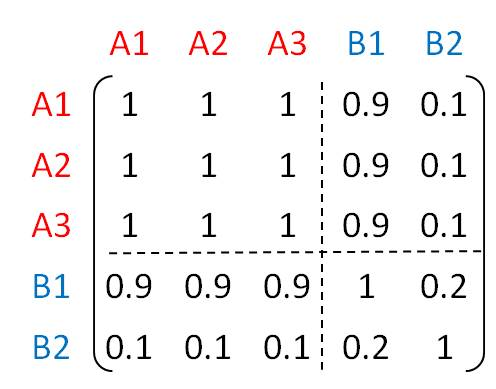
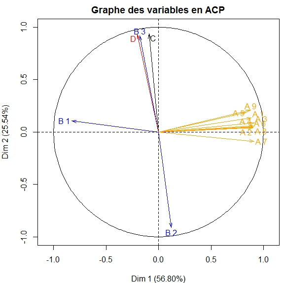

Site F. Husson
Pour toutes les questions, cocher la ou les affirmations vraies.
Q1) La pondération de l'AFM revient à diviser toutes les valeurs d'un groupe par la 1ère valeur propre de l'ACP effectuée sur les variables de ce groupe revient à diviser toutes les valeurs d'un groupe par la racine carrée de la 1ère valeur propre de l'ACP effectuée sur les variables de ce groupe revient à diviser toutes les valeurs des variables d'un groupe par l'inertie totale de ce groupe permet d'avoir la même inertie totale pour chaque groupe de variables permet d'avoir la même inertie pour le premier axe des ACP de chaque groupe de variables
Q2) On construit une AFM sur 2 groupes de variables quantitatives. Les 3 variables A1, A2, A3 du 1er groupe sont identiques, très corrélées avec la 1ère variable du 2ème groupe et très peu corrélées avec la 2ème variable du 2ème groupe. Les corrélations entre toutes les variables sont résumées dans la matrice suivante.  Avec la pondération de l'AFM, la première dimension de l'AFM sera très corrélée à A1, A2, A3 et B1 la première dimension de l'AFM sera parfaitement corrélée (corrélation égale à 1 ou -1) avec A1, A2 et A3 la deuxième dimension de l'AFM sera très corrélée à B2 la deuxième dimension de l'AFM sera corrélée à A1, A2, A3
Q3) On a construit une ACP (analyse en composantes principales) sur un tableau de 14 variables et obtenu le graphe des corrélations ci-dessous. La pondération de l'AFM n'est pas utilisée mais les variables sont coloriées par groupe : 4 groupes de variables de respectivement 9, 3, 1 et 1 variables.  Si on applique maintenant la pondération de l'AFM, la 1ère dimension de l'AFM sera très corrélée (positivement ou négativement) aux 9 variables A1, A2, ..., A9 la 1ère dimension de l'AFM sera très corrélée (positivement ou négativement) aux variables C, D, B2 et B3 la 2ème dimension de l'AFM sera très corrélée (positivement ou négativement) aux 9 variables A1, A2, ..., A9 la 2ème dimension de l'AFM sera très corrélée (positivement ou négativement) à B1 Q4) La première dimension de l'AFM aura une inertie proche de : 1 3 9 10
Q5) Avec la pondération de l'AFM, un groupe de variables très multidimensionnel (i.e. sur lequel une ACP conduirait à beaucoup de valeurs propres très différentes de 0) sera moins multidimensionnel un groupe ayant beaucoup de variables aura nécessairement plus d'importance dans l'analyse un groupe de variables unidimensionnel reste unidimensionnel un groupe de variables très multidimensionnel restera très multidimensionnel
Q6) On a construit une AFM sur plusieurs groupes de variables quantitatives. Le graphe des individus est une représentation des individus vus par toutes les variables de tous les groupes Deux individus qui prennent des valeurs proches sur toutes les variables sont proches sur le graphe des individus Deux individus opposés sur le premier axe de l'AFM prennent des valeurs différentes sur toutes les variables de tous les groupes Deux individus opposés sur le premier axe de l'AFM ne peuvent pas prendre de valeurs identiques sur toutes les variables d'un groupe Le graphe des variables permet de visualiser les liaisons entre toutes les variables de tous les groupes
Score = Réponses correctes :